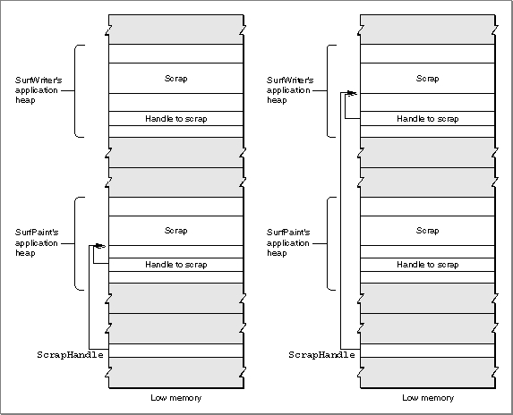

Legacy Document
Important: The information in this document is obsolete and should not be used for new development.
Important: The information in this document is obsolete and should not be used for new development.


Location of the Scrap
System software allocates space in each application's heap for the scrap and
allocates a handle to reference the scrap. The system global variableScrapHandlecontains a handle to the scrap of the current process. When system software launches
an application, it copies the data from the scrap of the previously active application into the application heap of the newly active application. If the scrap is too large to fit in the application's application heap, system software copies the scrap to disk and sets the value of the handle to the scrap in the application heap toNILto indicate that the scrap is on disk.Figure 2-6 shows two applications (SurfWriter and SurfPaint) that are in memory and shows the handles and allocated space for the scrap in each application's heap. In this example, SurfPaint was the previously active application and the user switches to the SurfWriter application. At this moment, the system global variable
ScrapHandlereferences the scrap in SurfPaint's application heap. SurfPaint's application heap contains a handle to the scrap in its application heap.System software sends SurfPaint a suspend event to begin the switch to the SurfWriter application. Because SurfPaint uses a private scrap, upon receiving the suspend event it copies data from its private scrap to the scrap. After SurfPaint responds to the suspend event, system software copies the data from the scrap in SurfPaint's application heap to SurfWriter's application heap, resizing the scrap in SurfWriter's application heap as necessary. System software sets the handle in SurfWriter's application heap to reference the new scrap and sets the system global variable
ScrapHandleto reference the scrap in SurfWriter's application heap. System software sends SurfWriter a resume event and sets theconvertClipboardFlagbit in themessagefield of the event record. System software sets this bit when the contents of the scrap have changed since the previous suspend event, indicating to the application that it should copy the scrap to its
private scrap.Figure 2-6 Location of the scrap in memory
 You can get the size of the scrap and a handle to the scrap in your application's heap by calling the
InfoScrapfunction.Although the scrap is usually located in memory, your application can write the contents of the scrap in memory to a scrap file using the
UnloadScrapfunction. After writing the contents of the scrap to disk, theUnloadScrapfunction releases the memory previously occupied by the scrap in your application's heap; thereafter, any operations your application performs on data in the scrap affect the scrap as stored in the scrap file on disk.You can use the
LoadScrapfunction to read the contents of the scrap file back into memory. TheLoadScrapfunction allocates memory in your application's heap for the scrap and reads the contents of the scrap on disk into memory; thereafter, any operations your application performs on data in the scrap affect the scrap in memory.The Scrap Manager keeps track of whether the scrap is in memory or on disk and always reads data from and writes data to the scrap's current location. As a result, your application seldom needs to know the location of the scrap. Your application should use the
UnloadScrapfunction only if the scrap in memory isn't large enough to hold the data you need to write to the scrap.If your application transfers the scrap from memory to disk and is then switched to the background, system software reads the scrap from disk into the newly active application's heap. When your application returns to the foreground, system software writes the scrap from the previous application's application heap back to disk.